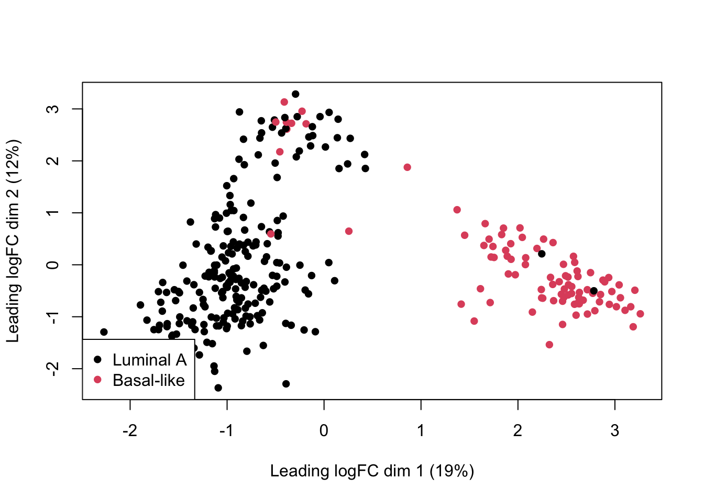

Module 4: Finding differentially expressed genes with RNA-seq
We are going to look at genes differentially expressed between Luminal and Basal subtypes of breast cancer.
For this we are going to download data from The Cancer Genome Atlas [ADD LINK] readily available in BioConductor.
Mini introduction to BioConductor
BioConductor is the most popular software repository for genomics data analysis, and is worth exploring in detail. This R-based ecosystem is open-source and community built. It contains software LINK packages but also DATA and ANNOTATION packages.
Examples of packages in BioConductor:
- Data package: The entire human genome sequence e.g., for the current GRCH38 build
- Data package: Multi-modal genomic data from The Cancer Genome Atlas for various tumour types
- Annotation package: Annotation for the Illumina DNA methylation array
- Software:
DEseqto process RNAseq data,minfito process DNA methylation array data, CHIPseeker for Chip-Seq data, etc.,
As we will see, BioConductor also has specialized data structures for bioinformatics operations. Data structures are specialized, standardized formats for organizing, accessing, modifying and storing data.
Examples of BioConductor data structures:
GenomicRanges: for working with genomic coordinatesSummarizedExperiment: container for storing data and metadata about an experimentMultiAssayExperiment: container for experiments where multiple genomic assays were run on the same samples
BioConductor uses its own package manager to install packages. Instead of install.packages() we use, BiocManager::install().
if (!requireNamespace("curatedTCGAData", quietly = TRUE))
BiocManager::install("curatedTCGAData")Fetch breast cancer data using curatedTCGAData
Load the package:
suppressMessages(library(curatedTCGAData))Let’s take a look at the available data for breast cancer, without downloading anything (set dry.run=TRUE).
Each row shows a data layer available. e.g., “mRNA” is transcriptomic data, “CNA” is chromosomal copy number aberration data, etc.,
curatedTCGAData(diseaseCode="BRCA", assays="*",dry.run=TRUE, version="2.0.1")## snapshotDate(): 2021-10-19## See '?curatedTCGAData' for 'diseaseCode' and 'assays' inputs## ah_id title file_size rdataclass
## 1 EH4769 BRCA_CNASeq-20160128 0 Mb RaggedExperiment
## 2 EH4770 BRCA_CNASNP-20160128 9.8 Mb RaggedExperiment
## 3 EH4771 BRCA_CNVSNP-20160128 2.8 Mb RaggedExperiment
## 4 EH4773 BRCA_GISTIC_AllByGene-20160128 1.2 Mb SummarizedExperiment
## 5 EH4774 BRCA_GISTIC_Peaks-20160128 0 Mb RangedSummarizedExperiment
## 6 EH4775 BRCA_GISTIC_ThresholdedByGene-20160128 0.3 Mb SummarizedExperiment
## 7 EH4777 BRCA_Methylation_methyl27-20160128_assays 60.7 Mb SummarizedExperiment
## 8 EH4778 BRCA_Methylation_methyl27-20160128_se 0.4 Mb SummarizedExperiment
## 9 EH4779 BRCA_Methylation_methyl450-20160128_assays 2646.4 Mb RaggedExperiment
## 10 EH4780 BRCA_Methylation_methyl450-20160128_se 6 Mb SummarizedExperiment
## 11 EH4781 BRCA_miRNASeqGene-20160128 0.6 Mb SummarizedExperiment
## 12 EH4782 BRCA_mRNAArray-20160128 27.3 Mb SummarizedExperiment
## 13 EH4783 BRCA_Mutation-20160128 4.5 Mb SummarizedExperiment
## 14 EH4784 BRCA_RNASeq2Gene-20160128 43.1 Mb DFrame
## 15 EH4785 BRCA_RNASeq2GeneNorm-20160128 64.5 Mb SummarizedExperiment
## 16 EH4786 BRCA_RNASeqGene-20160128 30 Mb SummarizedExperiment
## 17 EH4787 BRCA_RPPAArray-20160128 1.5 Mb SummarizedExperiment
## rdatadateadded rdatadateremoved
## 1 2021-01-27 <NA>
## 2 2021-01-27 <NA>
## 3 2021-01-27 <NA>
## 4 2021-01-27 <NA>
## 5 2021-01-27 <NA>
## 6 2021-01-27 <NA>
## 7 2021-01-27 <NA>
## 8 2021-01-27 <NA>
## 9 2021-01-27 <NA>
## 10 2021-01-27 <NA>
## 11 2021-01-27 <NA>
## 12 2021-01-27 <NA>
## 13 2021-01-27 <NA>
## 14 2021-01-27 <NA>
## 15 2021-01-27 <NA>
## 16 2021-01-27 <NA>
## 17 2021-01-27 <NA>We want to get unprocessed gene expression read counts, so let’s fetch the BRCA_RNASeq2Gene-20160128 layer. You can use ?curatedTCGAData to see a description of all data layers.
brca <- suppressMessages(
curatedTCGAData(
"BRCA",
assays="RNASeqGene",
dry.run=FALSE,
version="2.0.1")
)This call returns a MultiAssayExperiment object. Recall that this is a container for storing multiple assays performed on the same set of samples. See this tutorial to learn more.
Let’s briefly explore the brca MultiAssayExperiment object.
brca## A MultiAssayExperiment object of 1 listed
## experiment with a user-defined name and respective class.
## Containing an ExperimentList class object of length 1:
## [1] BRCA_RNASeqGene-20160128: SummarizedExperiment with 20502 rows and 878 columns
## Functionality:
## experiments() - obtain the ExperimentList instance
## colData() - the primary/phenotype DataFrame
## sampleMap() - the sample coordination DataFrame
## `$`, `[`, `[[` - extract colData columns, subset, or experiment
## *Format() - convert into a long or wide DataFrame
## assays() - convert ExperimentList to a SimpleList of matrices
## exportClass() - save data to flat filesassays() returns a list with all -omic data associated with this object. Here we just have the one we downloaded.
summary(assays(brca))## [1] "List object of length 1 with 0 metadata columns"names() shows the datatypes in each slot of assays():
names(assays(brca))## [1] "BRCA_RNASeqGene-20160128"So gene expression in slot 1.
We can subset the data to see what it looks like. Let’s look at just the first five measures, for the first 10 samples:
xpr <- assays(brca)[[1]]
head(xpr[1:10,1:5])## TCGA-A1-A0SB-01A-11R-A144-07 TCGA-A1-A0SD-01A-11R-A115-07 TCGA-A1-A0SE-01A-11R-A084-07
## A1BG 164 546 1341
## A1CF 0 0 0
## A2BP1 22 1 2
## A2LD1 127 331 498
## A2ML1 94 144 114
## A2M 102123 107181 101192
## TCGA-A1-A0SF-01A-11R-A144-07 TCGA-A1-A0SG-01A-11R-A144-07
## A1BG 836 512
## A1CF 1 3
## A2BP1 0 25
## A2LD1 526 451
## A2ML1 77 76
## A2M 50316 45826How many measures do we have?
nrow(xpr)## [1] 20502Prepare data for differential expression analysis
Process the expression values:
cnames <- colnames(xpr)
hpos <- gregexpr("-",cnames)
tmp <- sapply(1:length(cnames),function(i) {substr(cnames[i],1,hpos[[i]][3]-1)})
idx <- !duplicated(tmp)
# subset values
tmp <- tmp[idx]
xpr <- xpr[,idx]
colnames(xpr) <- tmpPatient metadata is contained in the colData() slot. Rows contain data for each patient and columns contain measures such as clinical characteristics:
pheno <- colData(brca)
colnames(pheno)[1:20]## [1] "patientID" "years_to_birth"
## [3] "vital_status" "days_to_death"
## [5] "days_to_last_followup" "tumor_tissue_site"
## [7] "pathologic_stage" "pathology_T_stage"
## [9] "pathology_N_stage" "pathology_M_stage"
## [11] "gender" "date_of_initial_pathologic_diagnosis"
## [13] "days_to_last_known_alive" "radiation_therapy"
## [15] "histological_type" "number_of_lymph_nodes"
## [17] "race" "ethnicity"
## [19] "admin.bcr" "admin.day_of_dcc_upload"head(pheno[,1:5])## DataFrame with 6 rows and 5 columns
## patientID years_to_birth vital_status days_to_death days_to_last_followup
## <character> <integer> <integer> <integer> <integer>
## TCGA-A1-A0SB TCGA-A1-A0SB 70 0 NA 259
## TCGA-A1-A0SD TCGA-A1-A0SD 59 0 NA 437
## TCGA-A1-A0SE TCGA-A1-A0SE 56 0 NA 1321
## TCGA-A1-A0SF TCGA-A1-A0SF 54 0 NA 1463
## TCGA-A1-A0SG TCGA-A1-A0SG 61 0 NA 434
## TCGA-A1-A0SH TCGA-A1-A0SH 39 0 NA 1437Let’s confirm that samples are in the same order in the xpr matrix and in the metadata table pheno.
ids_in_both <- intersect(pheno$patientID, colnames(xpr))
pheno <- pheno[which(pheno$patientID %in% ids_in_both),]
xpr <- xpr[,which(colnames(xpr) %in% ids_in_both)]
if (all.equal(pheno$patientID, colnames(xpr))!=TRUE) {
midx <- match(pheno$patientID, colnames(xpr))
xpr <- xpr[,midx]
}
Always check that samples are in the same order in the tables you are comparing, and use match() to reorder them if necessary. If they are not in the same order, you are matching data to the wrong sample, and your results will be wrong.
This table has many columns. Let’s just keep those related to tumour type according to the PAM50 classification. What tumour types do we have in this dataset?
pheno <- pheno[,c("patientID","PAM50.mRNA")]
table(pheno$PAM50.mRNA)##
## Basal-like HER2-enriched Luminal A Luminal B Normal-like
## 90 55 216 117 7Let’s limit the comparison to Luminal A and Basal type tumours.
idx <- which(pheno$PAM50.mRNA %in% c("Luminal A","Basal-like"))
pheno <- pheno[idx,]
xpr <- xpr[,idx]
dim(pheno)## [1] 306 2dim(xpr)## [1] 20502 306Differential expression analysis with edgeR
Now that the data are prepared, let’s created a DGEList object (DGE stands for “Differential Gene Expression”). This object is what we will use for our differential expression analysis.
Note: Make phenotype of interest categorical. In R that means converting to a factor type with categorical levels. You can think of levels as ordinal representations (e.g., first level = 1, second = 2, etc., )
If levels= are not set, the default uses alphabetical order. We recommend explicitly setting levels so that there are no assumptions.
Load the edgeR package:
suppressMessages(require(edgeR))Let’s create a DGEList object for the differential expression analysis. Note that group must be a categorical variable (use factor() to convert it to one):
group <- factor(
pheno$PAM50.mRNA,
levels=c("Luminal A","Basal-like")
)
dge <- DGEList(
counts = xpr,
group = group
)Remove low-count genes: To filter low count genes, we’re going to use a normalized count measure called cpm (counts per million). We are going to keep genes with 100 or greater counts per million for at least two samples:
(dge$counts[1:6,1:20])## TCGA-A1-A0SD TCGA-A1-A0SE TCGA-A1-A0SH TCGA-A1-A0SJ TCGA-A1-A0SK TCGA-A1-A0SO TCGA-A2-A04N
## A1BG 546 1341 1126 1433 626 2502 592
## A1CF 0 0 1 0 1 4 1
## A2BP1 1 2 4 1 1 0 0
## A2LD1 331 498 838 831 2948 883 487
## A2ML1 144 114 127 119 367 335 87
## A2M 107181 101192 81857 128591 27972 32286 35748
## TCGA-A2-A04P TCGA-A2-A04Q TCGA-A2-A04T TCGA-A2-A04U TCGA-A2-A04V TCGA-A2-A04Y TCGA-A2-A0CM
## A1BG 503 660 485 1269 870 1392 297
## A1CF 4 1 3 5 2 1 0
## A2BP1 2 1 11 0 7 18 0
## A2LD1 384 694 534 200 454 932 161
## A2ML1 7435 13543 89424 3088 160 250 4770
## A2M 38122 70012 76814 178113 50336 75809 37519
## TCGA-A2-A0CP TCGA-A2-A0CQ TCGA-A2-A0CS TCGA-A2-A0CU TCGA-A2-A0CV TCGA-A2-A0CZ
## A1BG 1240 919 1422 688 532 1628
## A1CF 0 1 0 0 0 4
## A2BP1 2 1 8 1 6 3
## A2LD1 335 111 589 329 458 468
## A2ML1 76 217 65 168 162 102
## A2M 76407 45968 18353 197374 85242 85978Look at counts per million using cpm:
cpm(dge)[1:5,1:5]## TCGA-A1-A0SD TCGA-A1-A0SE TCGA-A1-A0SH TCGA-A1-A0SJ TCGA-A1-A0SK
## A1BG 6.40538988 10.40014782 7.874879329 11.979028558 4.544931080
## A1CF 0.00000000 0.00000000 0.006993676 0.000000000 0.007260273
## A2BP1 0.01173148 0.01551103 0.027974705 0.008359406 0.007260273
## A2LD1 3.88312097 3.86224729 5.860700602 6.946666247 21.403285660
## A2ML1 1.68933359 0.88412890 0.888196869 0.994769294 2.664520298This next line is a bit complex so let’s unpack it:
- We are using
cpm(dge)>100as a logical test (“which genes have cpm > 100?”). - For each gene, we want that test to be true for at least two samples. For this we use
rowSums()to add up how many samples meet that criteria.
dim(dge) #before ## [1] 20502 306tokeep <- rowSums(cpm(dge)>100) >= 2
dge <- dge[tokeep,keep.lib.sizes = FALSE]
dim(dge) #after## [1] 7699 306Normalize the data:
dge <- calcNormFactors(dge)Visualize the data:
plotMDS(
dge,
col=as.numeric(dge$samples$group),
pch=16
)
legend(
"bottomleft",
as.character(unique(dge$samples$group)),
col=c(1,2), pch=16
)
Let’s create a model design to identify genes with a group effect:
group <- dge$samples$group
mod <- model.matrix(~group)Estimate variation (“dispersion”) for each gene:
dge <- estimateDisp(dge, mod)Call differentially expressed genes.
Here we:
- fit a model for each gene, using
glmFit - we have built in an estimate of gene-wise dispersion to better identify treatment effect (or “contrast”)
- for each gene, we run a likelihood ratio test which compares which model fits the data better: a null model (treatment effect = 0) or a full model (treatment effect is non-zero)
Note that coef=2 fetches the effects for the treatment effect; coef=1 would fetch effects of the intercept term.

fit <- glmFit(dge,mod)
diffEx <- glmLRT(fit, coef = 2) # get coefficients for group termLook at the top 10 differentially expressed genes:
tt <- topTags(diffEx, n=10)
tt## Coefficient: groupBasal-like
## logFC logCPM LR PValue FDR
## ART3 4.437401 3.455108 795.7399 4.552774e-175 3.505180e-171
## EN1 4.493149 4.469186 568.8034 1.022382e-125 3.935658e-122
## MTHFD1L 2.072720 4.744988 548.6874 2.429549e-121 6.235032e-118
## CLDN6 5.917771 1.735389 528.0710 7.423651e-117 1.428867e-113
## CENPW 2.628365 3.806891 523.0933 8.985654e-116 1.383611e-112
## IL12RB2 3.981078 3.080989 507.2309 2.539169e-112 3.258177e-109
## TTLL4 1.857331 5.441088 504.0036 1.279029e-111 1.406749e-108
## CXorf49B 6.007052 1.678586 484.6339 2.096210e-107 2.017340e-104
## GFRA3 4.890609 1.725042 468.7621 5.958600e-104 5.097251e-101
## HAPLN3 2.737617 5.215775 460.3033 4.129466e-102 3.179276e-99For the next steps we’re going to need stats on all the genes we’ve tested. So let’s get those:
tt <- as.data.frame(
topTags(diffEx, n=nrow(dge)
)
)A QQplot directly compares the pvalues from our statistical tests to the expected values from a random uniform distribution (p-value selected at random).
A deviation from the x=y line (diagonal) towards the top indicates an enrichment of signal.
qqplot(
tt$PValue,
runif(nrow(tt)), # randomly sample from uniform distribution
xlab="p-values from real data",
ylab="Randomly-sampled values from Uniform distribution",
pch=16,cex=0.5
)
# x=y line as reference
abline(0,1,col="red")Now let’s call differentially expressed genes using the decideTestDGE() function and use summary() to see how many genes are upregulated (value +1), downregulated (value -1) and not called as changed (value 0)
diffEx2 <- decideTestsDGE(diffEx,
adjust.method="BH",
p.value=0.05
)
summary(diffEx2)## groupBasal-like
## Down 2813
## NotSig 1681
## Up 3205A volcano plot can help visualize effect magnitude - log2 fold-change or log2FC in the table ` against the corresponding p-value. Here we create a volcano plot, and colour-code upregulated genes in red, and downregulated genes in blue.
Note that we are combining two different tables, tt and diffEx2 so we need to ensure the order is the same. Otherwise the colours will be in the wrong order (try it for yourself!).
midx <- match(rownames(tt), rownames(diffEx2))
diffEx2 <- diffEx2[midx,]
cols <- rep("black",nrow(diffEx2))
cols[which(diffEx2>0 )] <- "red"
cols[which(diffEx2<0)] <- "blue"
# volcano plot
plot(tt$logFC,-log10(tt$PValue),pch=16,
col=cols)
abline(v=0,lty=3)Finally we can write our differential expression results out to file:
write.table(tt,file="diffEx.results.txt",
sep="\t",
col=TRUE,
row=TRUE,
quote=FALSE
)Exercise
- Install the
yeastRNASeqpackage from Bioconductor andlibraryit into your environment - Import the geneLevelData using:
data("geneLevelData") - Learn about this data and then put it through the same workflow we just did for the breast cancer:
- Create a new
DGEListobject with your gene counts - Filter genes with CPM > 25 in at least two samples
- Normalize and plot your data
- Create a model matrix for analysis
- Fit your model
- How many significantly up-regulated genes are there at the 5% FDR level? How many significantly down-regulated genes? How many in total
- Create a volcano plot
- Bonus: Create a histogram of p-values. Is there a signal?
Is there anything about the data that might make you question the results?